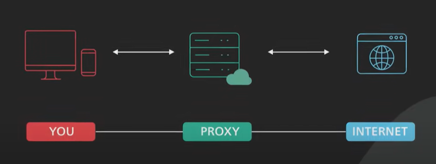
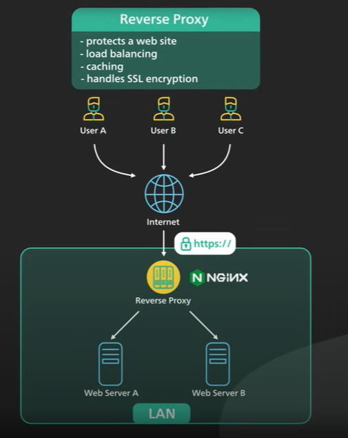

What is a Proxy?
A proxy server acts as an intermediary between a client and the internet. When a client, such as a web browser, sends a request to access a website, the request first goes to the proxy server. The proxy then forwards the request to the target server on behalf of the client. Once the target server responds, the proxy server sends the response back to the client.
Types of Proxy Servers
- Forward Proxy
- Transparent Proxy
What is Forward Proxy?
A forward proxy is a server that sits between a client (such as a web browser) and the internet. It acts as an intermediary, forwarding client requests to the target server on the internet and then relaying the server’s response back to the client. It is the most common type of proxy server.

Example
A company uses a forward proxy server to manage and monitor employee internet usage. The proxy filters requests, blocks access to certain websites, and logs user activity for security and compliance purposes.
Why Do We Need a Forward Proxy?
- Anonymity: Hides the client's IP address from the internet, providing privacy.
- Access Control: Controls and restricts access to certain websites or online resources.
- Caching: Caches frequently accessed web content to reduce bandwidth usage and speed up access.
- Security: Protects internal networks by filtering and monitoring outgoing traffic.
Examples of Forward Proxy
- Squid Proxy: A popular forward proxy for caching and filtering web content.
- Charles Proxy: A cross-platform web debugging proxy used by developers.
- Apache Traffic Server: A high-performance forward proxy used for caching and load balancing.
Technologies Used in Forward Proxies
- HTTP/HTTPS Protocols: Used for handling web traffic between the client and internet.
- SSL/TLS: Provides encryption for secure communications.
- Filtering and Logging Tools: Control access and monitor usage.
What is a Reverse Proxy?
A reverse proxy is the mirror image of a forward proxy. Instead of sitting between the client and the internet, a reverse proxy sits between the client and one or more backend servers. Clients make requests to the reverse proxy, which then forwards those requests to the appropriate backend server. The server's response is then sent back to the client by the reverse proxy.
Example: Nginx as a Reverse Proxy
A popular e-commerce website is hosted on multiple backend servers to handle high traffic volumes. To manage incoming client requests efficiently, the website uses Nginx as a reverse proxy.
Why Do We Need a Reverse Proxy?
- Load Balancing: Distributing incoming client requests across multiple backend servers to ensure no single server becomes overloaded, thus improving performance and reliability.
- Security: Acting as a gateway, a reverse proxy can hide the IP addresses of backend servers, making it more difficult for attackers to target them directly. It can also enforce security policies, such as SSL termination, where the proxy handles SSL encryption/decryption instead of each backend server.
- Caching: Reverse proxies can cache content from backend servers to serve repeated requests faster, reducing the load on backend systems.
- Compression: Compressing responses before sending them to clients, reducing bandwidth usage and improving response times.
- Global Server Load Balancing (GSLB): In cloud environments, reverse proxies can route traffic to different data centers based on the client’s geographic location or the current load on the servers.
- SSL Termination: Handling SSL encryption/decryption to offload this resource-intensive task from the backend servers.
- Content Delivery: Serving static content directly, which reduces the load on the backend servers and speeds up content delivery to the client.
Examples of Reverse Proxy
- Nginx: A high-performance reverse proxy and web server commonly used for load balancing and caching.
- HAProxy: A popular open-source reverse proxy and load balancer known for its reliability and performance.
- Apache HTTP Server: Can be configured as a reverse proxy to manage traffic for backend servers.
Technologies Used in Forward Proxies
- HTTP/HTTPS Protocols: Used for handling web traffic between the client and internet.
- Load Balancing Algorithms: Such as round-robin, least connections, and IP hash for distributing traffic.
- SSL/TLS: For secure communications and SSL termination.
- Health Checks: To monitor the status of backend servers and reroute traffic as needed.
- Caching Mechanisms: To improve response times and reduce load on backend servers.
Reverse Proxy vs. API Gateway vs. Load Balancer
Reverse Proxy
- Function: Acts as an intermediary between clients and backend servers, forwarding requests and responses.
- Primary Use Cases: Load balancing, SSL termination, security, and caching.
- Example: Nginx or HAProxy used to manage traffic for a web application.
API Gateway
- Function: Manages and routes API requests to appropriate microservices, often providing additional features like authentication, rate limiting, and monitoring.
- Primary Use Cases: Microservices architectures, API management, enforcing security and policies.
- Example: Amazon API Gateway or Kong used to manage API calls for microservices in a cloud environment.
Load Balancer
- Function: Distributes incoming traffic across multiple servers to ensure no single server becomes overloaded.
- Primary Use Cases: Ensuring high availability and reliability of services by distributing load evenly.
- Example: AWS Elastic Load Balancing or F5 Networks used to balance traffic among several web servers.